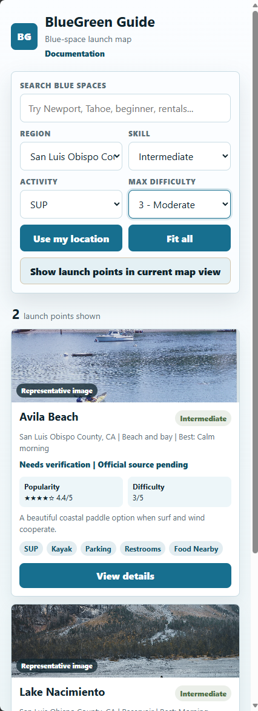

Available filters
Phase 1 supports filters for region, skill level, water activity, and maximum difficulty.

Combine filters
Filters can be used with search and curated collections. If the result set becomes too narrow, clear one or more filters to broaden it again.